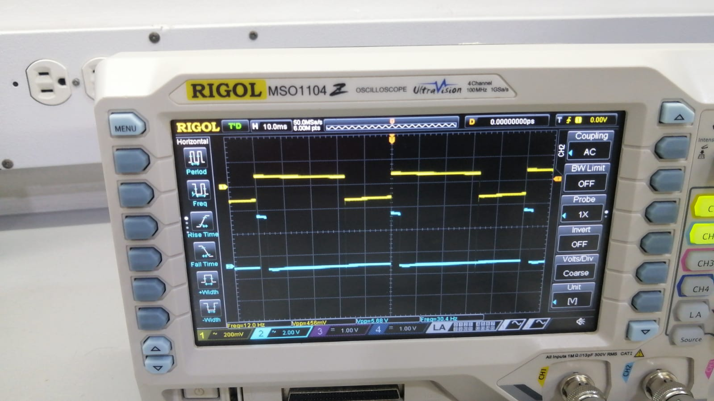

Objetivo del proyecto
Edición y producción de una publicación técnica especializada
El objetivo del proyecto fue la edición y producción de un libro técnico especializado en amplificadores operacionales, concebido como un puente riguroso entre la teoría y la práctica. Se buscó garantizar la integridad pedagógica de cada capítulo, integrando de forma coherente el análisis matemático formal, la simulación en MultiSim y la validación experimental con hardware, de modo que el material resultante constituyera una referencia de alto valor para la electrónica analógica.
Alcance
Desarrollo integral de aplicaciones avanzadas
El proyecto abarcó el desarrollo completo de seis aplicaciones avanzadas con amplificadores operacionales. Cada aplicación fue documentada mediante la deducción formal de los cálculos, el esquemático de simulación en MultiSim, la lista de materiales y una comparación de doble pantalla entre las formas de onda simuladas y las capturas reales obtenidas con osciloscopio.
El alcance técnico incluyó desde el diseño y validación de los circuitos hasta la maquetación editorial en LaTeX. Debido a restricciones de disponibilidad y costo, el amplificador operacional de alta velocidad THS3491 fue reemplazado por el LM358. Aunque esta sustitución limitó el desempeño en aplicaciones de pulsos del orden de nanosegundos, permitió mantener la viabilidad experimental y documental del proyecto.
Metodología de trabajo
Coordinación, colaboración y validación técnica
Como responsable del equipo, lideré la participación conjunta de José Fernando Ramos Chilito, Daniel Felipe Garrido y Nicolás González Vega (colaborador técnico). Mi labor de coordinación abarcó desde el diseño y validación de los circuitos hasta la maquetación técnica en LaTeX, garantizando la correcta ejecución de cada fase del proyecto.
Para fortalecer el trabajo colaborativo implementé una metodología de autoría por pares rotativos, emparejando a José Fernando Ramos, especialista en análisis matemático, con Daniel Felipe Garrido, experto en simulación MultiSim. De esta manera, cada ecuación desarrollada contaba con una validación visual y experimental. Paralelamente, el trabajo de prototipado realizado por Nicolás González Vega actuó como criterio final para verificar la viabilidad práctica de los diseños propuestos.


Un ejemplo representativo de esta dinámica fue la reestructuración del cronograma para incorporar hallazgos relacionados con inestabilidades térmicas detectadas durante las pruebas experimentales. Esta decisión permitió transformar una dificultad técnica en una oportunidad de aprendizaje colectivo, integrando evidencia empírica directamente en el manuscrito final.
Documentación del proceso
Registro de incidencias y aprendizaje técnico
El proceso fue documentado de manera detallada, registrando tanto la evolución de los diseños como las dificultades encontradas durante las etapas de simulación e implementación. Entre los principales hallazgos destacan las inestabilidades térmicas detectadas durante el prototipado, los problemas de alimentación en la fuente de corriente del generador de pulsos programable y la sustitución del amplificador operacional THS3491 por el LM358.
Cada una de estas incidencias fue analizada y documentada junto con su respectiva solución, permitiendo incorporar al libro una perspectiva real de ingeniería basada en la identificación, análisis y resolución de problemas.
Contribución personal
Integración de teoría, simulación y hardware
Mi contribución trascendió la coordinación general del proyecto al actuar como integrador de los distintos sistemas de conocimiento involucrados. La principal evidencia de este aporte fue la creación de un flujo de trabajo reproducible denominado LaTeX–MultiSim–Hardware, que permitió estandarizar la relación entre cálculos teóricos, simulaciones y validaciones experimentales.
Asimismo, identifiqué una discrepancia fundamental entre los resultados de simulación y el análisis teórico relacionado con el modelo macro utilizado para representar el amplificador operacional en MultiSim. Al detectar que dicho modelo no contemplaba adecuadamente el efecto de carga en lazo abierto, propuse una prueba de estrés en hardware que permitió validar el comportamiento real del circuito y refinar los criterios de diseño aplicados en las seis aplicaciones desarrolladas.
Soluciones implementadas
Resolución de desafíos técnicos
Resultados
Aplicaciones verificadas experimentalmente
El resultado final fue un libro técnico compuesto por seis capítulos, cada uno dedicado a una aplicación avanzada basada en amplificadores operacionales. Los procedimientos fueron documentados mediante cálculos, simulaciones y validaciones experimentales, permitiendo establecer una alta coherencia entre teoría y práctica.
Ejemplo 1 – Probador de voltaje de Pinch-off con Op-Amp
Se realizó una caracterización dinámica del MOSFET utilizando el modo XY del osciloscopio. Una señal diente de sierra de 50 mV a 2 kHz permitió generar un barrido lineal de corriente entre 0 y 10 mA, obteniendo la curva característica ID = f(VGS) y permitiendo identificar visualmente la región de corte y el inicio de la saturación.

Ejemplo 2 – Generador de ancho de pulso programable
Esta aplicación emplea una fuente de corriente constante para cargar linealmente un capacitor, generando una rampa de voltaje más precisa que la obtenida mediante redes RC convencionales. Durante el desarrollo fue necesario aumentar la tensión de alimentación del operacional para alcanzar el rango de corriente requerido, restaurando así la precisión temporal del sistema.

Para las demás aplicaciones no se presentaron inconvenientes significativos gracias a la planificación previa y a la experiencia adquirida durante las primeras fases del proyecto. Como resultado, todas las aplicaciones desarrolladas mantuvieron un comportamiento estable y una sólida correlación entre teoría, simulación e implementación física.
acontinuación se presentan las aplicaciones desarrolladas:
Ver documentación completa (PDF)Contenido desarrollado